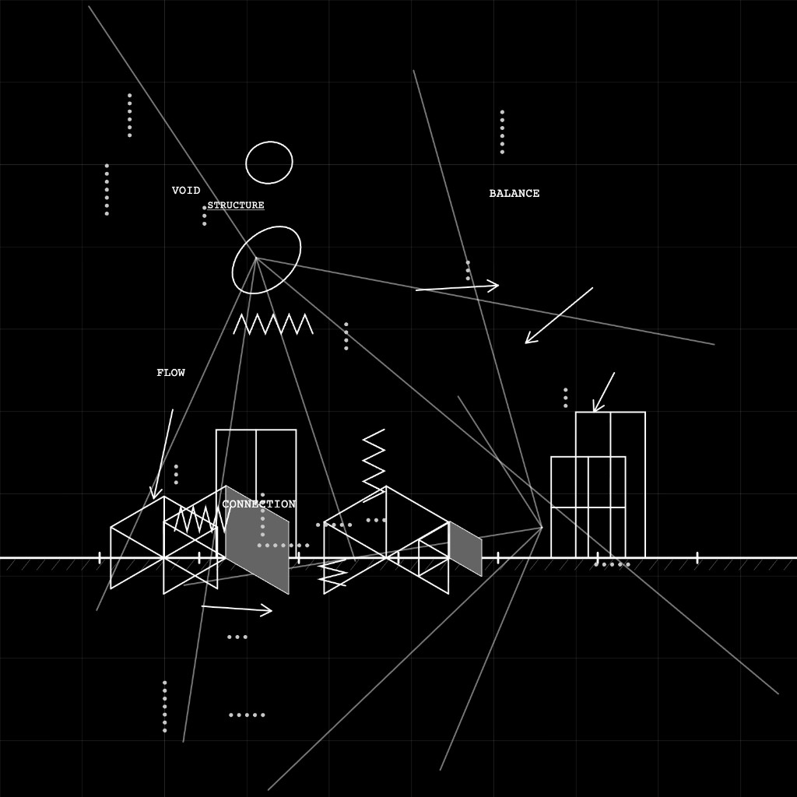

Generative works exploring collective memory, ecological systems, and architectural notation — each produced live in the browser, each unique at the moment of its generation.
Works
Two viewers, one emergent result. Forms surface from shared presence — what appears belongs to neither and both. No two encounters repeat.
Industrial forms rendered in three dimensions — mechanical structures that process, transform, and ultimately dissolve their own purpose.
A three-dimensional bloom fills the room. Each particle carries a piano note — the space breathes, accumulates, and releases.
A world with an age. Boxes grow from white ground, breathe at full life, and return to white. The camera moves. You do not know what you will find.
Two histories in a room — move your cursor to carry one. When they approach, photographs that belong to both surface. The archive responds to the relationship between bodies.

Infinite architectural documents — each a unique composition of grid, elevation, cube, and notation that no hand drew and no building will follow.
Mark Walhimer (1964) is a generative artist and museum designer with twenty years of experience creating interactive public spaces. His practice moves between the computational and the spatial — finding in generative code the same structural logic that underlies the design of institutions.
Managing partner of Museum Planning LLC. Executive Director, Museum of Arts & Sciences (Macon, Georgia). Fulbright Specialist. Author of Museums 101 and Designing Museum Experiences (Bloomsbury). Former design consultant, Smithsonian Institution. Faculty, Georgia Institute of Technology and Tec de Monterrey.
Began in the studio of Judy Pfaff, 1985. Exhibited at MIRADAS TANGENTES, Madrid, 2026.